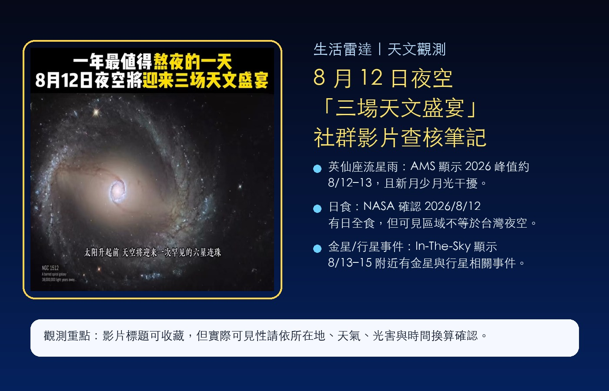
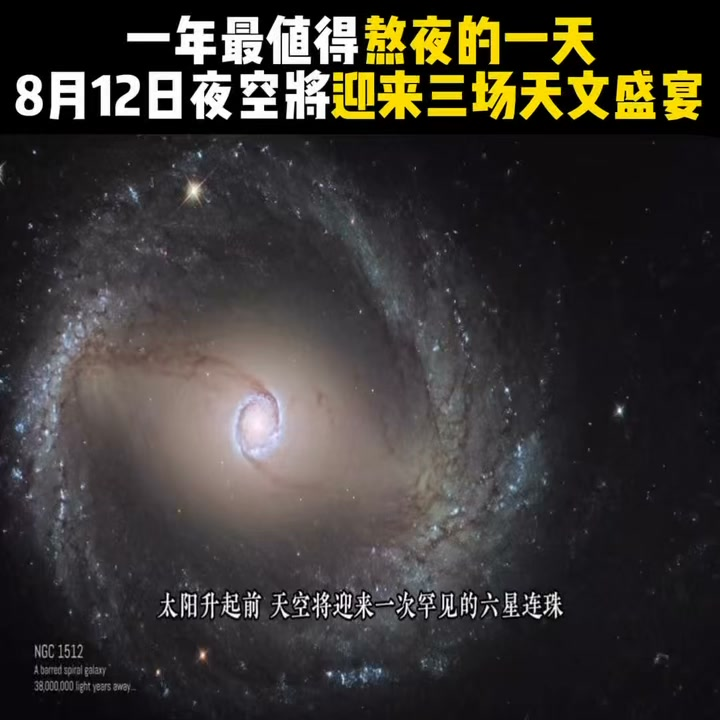

Facebook Reel｜8 月 12 日夜空將迎來三場天文盛宴：社群影片查核筆記

為什麼保存
這支 Facebook Reel 用「一年最值得熬夜的一天」包裝 8 月 12 日前後的天文現象，屬於很容易被轉傳的生活型天文內容。它值得放進生活雷達，不是因為標題一定精準，而是因為它提醒了兩件事：
- 8 月中旬確實常是英仙座流星雨觀測季。
- 社群短影音常把全球天象、不同時區與不同可見區域合併成「同一天晚上必看」，需要查核所在地與觀測條件。

可見資訊
Facebook 登出狀態可解析到：
- 來源：鲸日电影
- Reel canonical：`https://www.facebook.com/reel/2329976707811856`
- OG 標題：`28 萬次觀看 · 4,184 個心情 | 一年最值得熬夜的一天，8月12日夜空将迎来三场天文盛宴 | 鲸日电影`
- 頁面文字另可見：4,184、36、750 等互動數字。
- 縮圖文字：`一年最值得熬夜的一天 8月12日夜空將迎來三場天文盛宴`。
- 縮圖底部字幕提到：「太陽升起前 天空將迎來一次罕見的六星連珠」。
查核重點
### 1. 英仙座流星雨：8 月 12–13 日確實是重點時段
American Meteor Society 的 2026–2027 meteor shower calendar 顯示，Perseids（英仙座流星雨）活躍到 8 月 24 日，峰值在 **2026 年 8 月 12–13 日**，且月相標示為 **Moon 0% full**。這代表 2026 年這一波英仙座流星雨觀測條件相對友善：少月光干擾，若天氣與光害條件好，深夜到黎明前值得觀察。
實務提醒：台灣觀測仍要看雲量、光害、地平線遮蔽與實際峰值時間換算；到郊區、山區或海邊，通常比市區更有機會看到流星。
### 2. 2026 年 8 月 12 日有日全食，但不等於「台灣夜空盛宴」
NASA Eclipse 資料確認 **Total Solar Eclipse of 2026 Aug 12**。但日食是白天、且可見路徑受地理位置限制；它不能直接解讀成所有地區都能在 8 月 12 日夜空看到的現象。
對台灣讀者來說，這類社群影片若把日食也算進「三場盛宴」，就要特別確認：
- 可見區域是否包含台灣？
- 發生時間換算到台灣是白天、夜晚，還是根本不可見？
- 是日全食、日偏食，還是只能看直播/照片？
### 3. 其他行星事件要分開看
In-The-Sky.org 的 2026 年 8 月天象行事曆在 8 月 13–15 日附近列出新月、日食、金星相關相位/東大距，以及水星、木星、月亮與金星等合相/接近事件。這些事件常被短影音合併成「行星連珠」或「六星連珠」。
但「連珠」通常是肉眼視覺上的大致排列，不等於天體真的排成一直線；可見性也取決於太陽距角、地平線高度、天亮前時間與觀測地點。
給欒帥的觀測建議
如果目標是實際觀測，而不是只看社群影片，最值得抓的是英仙座流星雨：
- 時間：8 月 12–13 日深夜到黎明前。
- 地點：遠離市區光害，找開闊天空。
- 方向：不必只盯著英仙座，讓眼睛適應黑暗後看大範圍天空。
- 裝備：躺椅、薄外套、防蚊、紅光手電筒，比望遠鏡更重要。
- 心態：流星雨不是煙火秀，可能需要 20–40 分鐘才開始有收穫。
風險提醒
- 社群影片標題「三場天文盛宴」可能混合全球事件、不同時區與不同可見條件，不宜直接視為台灣可見清單。
- 日食、行星合相、流星雨的最佳觀測時間各不相同；不要只看單一日期。
- 縮圖使用深空星系影像，可能是視覺示意，不代表肉眼當晚能看到那樣的畫面。
- 「六星連珠」是大眾化說法，需查確認實際是哪幾顆行星、距角與可見高度。
- 天氣與光害會大幅影響結果；出門前應查雲量、月相、日出時間與所在地天象資料。
適合保存的原因
這則影片是很典型的「天文事件短影音」：標題強、畫面震撼、容易讓人想熬夜觀看；但真正可操作的資訊，需要拆成流星雨、日食、行星事件逐一查核。保存它的價值在於：提醒之後看到「某天夜空罕見奇觀」時，要先問三個問題：在哪裡可見？幾點可見？肉眼可見還是只適合直播/攝影？